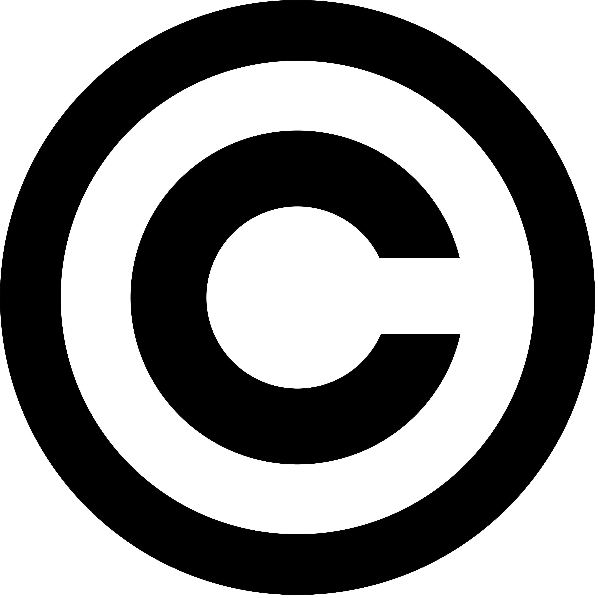
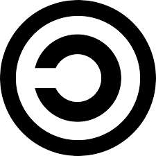
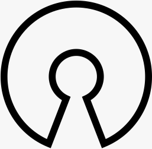
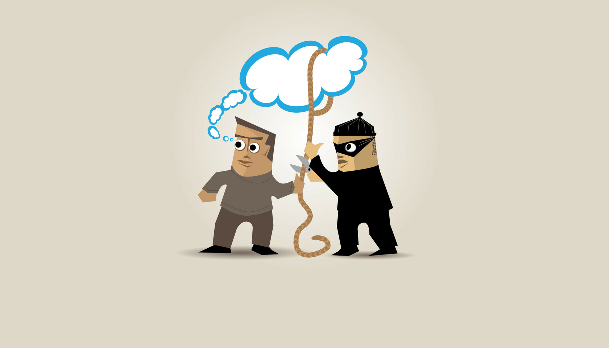

Internetové autorské práva
Autorské práva na internete chránia obsah pred
nelegálnym kopírovaním a používaním. Ochrana sa vzťahuje na
hudbu, videá, fotografie, knihy, programy a ďalšie digitálne diela.
Autorské právo vzniká automaticky po vytvorení diela
a autor nemusí nič registrovať.
Ako fungujú autorské práva?
- Autor vlastní práva na svoje dielo
- Dielo nemožno kopírovať bez povolenia
- Obsah na internete je chránený zákonom
- Autor môže udeliť licenciu
- Porušenie práv môže viesť k pokutám
- Autorské práva platia aj na sociálnych sieťach
Prehľad najpoužívanejších licencií
| Obrázok |
Licencia |
Popis |
|

|
Copyright |
Všetky práva vyhradené (Netflix) |
|

|
Copyleft |
Výtvory vo voľnom obehu (Linux) |

|
Creative Commons |
Autor si vyberie, čo dovolí ostatným robiť (Wikipédia, cc) |
|
|
Verejná doména |
Verejné vlastníctvo (diela po vypršaní copyrightu) |
|

|
Open Source |
Zdrojový kód môže byť upravovaný (Firefox) |
Najčastejšie porušenia práv
- Nelegálne sťahovanie filmov, hudby
- Kopírovanie domácich úloh z internetu
- Používanie cudzích fotografií bez uvedenia autora
- Sťahovanie plateného softvéru zadarmo
- Pirátsky softvér
- Plagiátorstvo článkov

Otvorené systémy (Linux, Android, Mozilla Firefox)
- Znaky OS:
- možnosť úprav programu
- otvorené štandardy
- kompatibilita s inými systémami
- voľnejšie licencie
- spolupráca komunity vývojárov
- Autor povoluje:
- program používať
- kopírovať ho
- upravovať ho
- zdieľať ho
- Výhody:
- voľný prístup ku zdrojovému kódu
- možnosť legálneho kopírovania a zdieľania podľa licencie
- nižšie náklady – mnohé programi sú zdarma
- Nevýhody:
- niektoré licencie vyžadujú zverejnenie úprav
- možné bezpečnostné riziká pri nesprávnych úpravách
- slabšia oficiálna technická podpora
Zaujímavosť
Majetkové autorské práva väčšinou trvajú počas života autora
a ešte 70 rokov po jeho smrti.
Užitočné stránky
Creative Commons
LITA - Autorské práva
Sankcie za porušenie GDPR
Záver
Autorské práva sú dôležité pre ochranu tvorcov
a ich diel. Každý používateľ internetu by mal vedieť,
ako správne používať obsah a rešpektovať pravidlá internetu.
Zdroje obrázkov
Obrázky boli použité na vzdelávacie účely.
Zdroje: Wikipedia, Creative Commons, oficiálne stránky projektov.